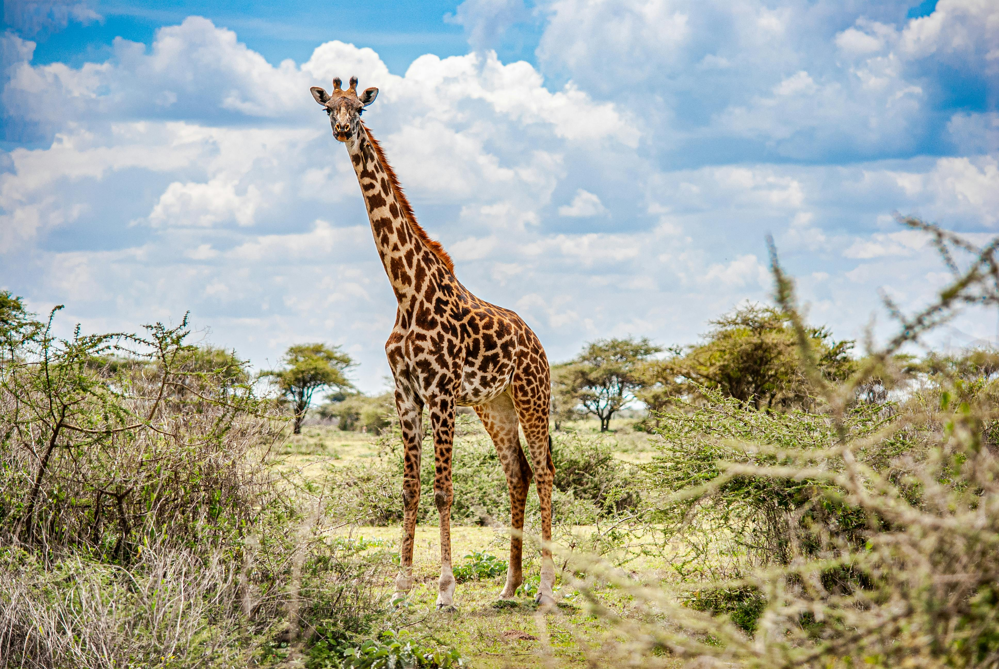

Northern giraffe
Male giraffes (called bulls) swing their long necks and butt heads to see who is stronger. This is known as “necking“ and most giraffes don’t get hurt doing it. Eventually one male will give up and walk away, probably to eat.
- Scientific Name: Giraffa camelopardalis
- Average Height: 5.5 m (18 ft)
- Average Lifespan: 14-16 Years
- Habitat: Dry savannahs biomes
The northern giraffe also known as three-horned giraffe, is the type species of giraffe, G. camelopardalis, and is native to North Africa, although alternative taxonomic hypotheses have proposed the northern giraffe as a separate species.